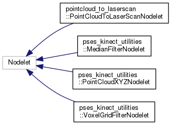
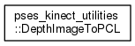
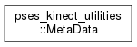
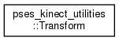

Main Page
Namespaces
Classes
Files
Class List
Class Hierarchy
Class Members
Class Hierarchy
Go to the textual class hierarchy




pses_kinect_utilities
Author(s): Nicolas Acero
autogenerated on Sun Nov 26 2017 19:23:52